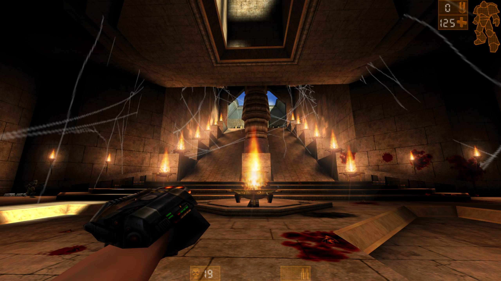
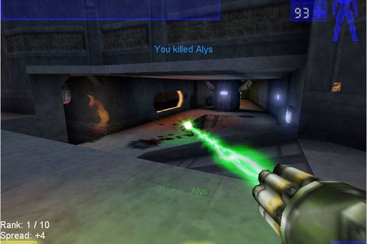
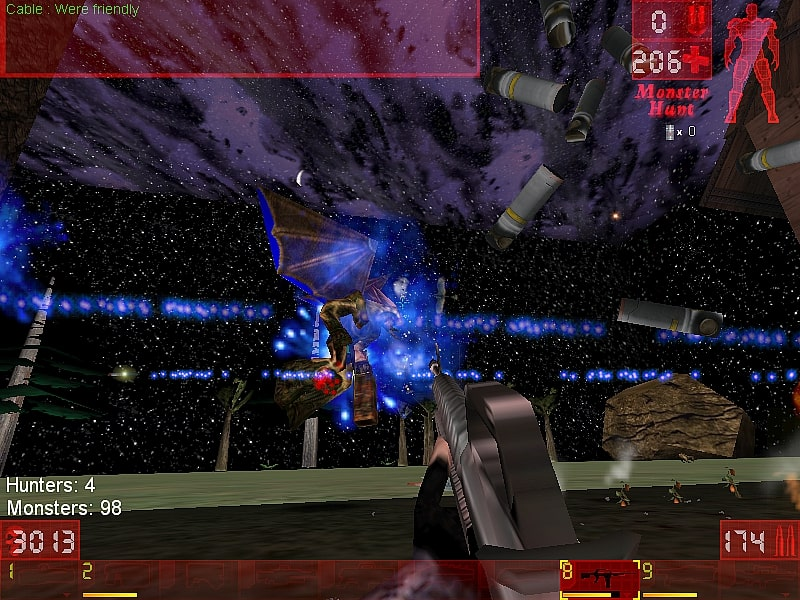

Unreal Turnament
Was ist Unreal Turnament?
Unreal Turnament ist ein Ego-shooter der in der Zukunft spielt. Es wurde am 23 November 1999 von GT Interactive veröffentlicht
und war einer der ersten first-Person shootern. Besonderns an Unreal Turnament ist, dass 16 Mitarbeiter nur 18 Monate daran gearbeitet haben.
UT bietet noch mehr Spielmodi als Quake 3 Arena und sieht genauso gut aus - ein Fest für Multiplayer-Fans! Ein Meilenstein!
Zitat von einem Review eines Spielers
Um was geht es in Unreal Turnament?
Der Bergbaukonzern Liandri veranstaltet Wettkämpfe, in denen es um Preisgeld und Ehre geht, das „Unreal Tournament“. Hierbei treten verschiedene Kämpfer in Arenen gegeneinander an, um sich in verschiedenen Disziplinen zu beweisen.
In der Einleitung des Spiels heißt es:
„Im Jahr 2291 legalisierte die New-Earth-Regierung Kämpfe ohne Regeln, um die Gewalt unter Weltraum-Bergarbeitern zu kontrollieren. Die Liandri Mining Corporation veranstaltete in Zusammenarbeit mit der New-Earth-Regierung eine Serie von Ligen mit blutigen, öffentlichen Kämpfen.
Die Beliebtheit der Kämpfe stieg mit ihrer Brutalität. Schon bald erkannte Liandri, dass die öffentlichen Wettkämpfe ihr profitabelstes Geschäft wurden. Die professionelle Liga war geboren: Eine Gruppe der brutalsten und besten Krieger aus dem gesamten Weltraum wurden ausgesucht um in einem großen Turnier gegeneinander zu kämpfen.
Jetzt schreibt man das Jahr 2341, 50 Jahre sind vergangen seit der Einführung des Deathmatch. Die Profite des Turniers gehen in die Hunderte von Milliarden. Du wurdest ausgesucht, um in der professionellen Liga nach den Liandri-Regeln zu kämpfen.




| Unreal Turnament Details | |
|---|---|
| Genre | Ego-shooter, Science Fiction, |
| Spielmodie | Deathmatch, Team Deathmatch, Domination, Capture the Flag, Last Man Standing |
| Plattformen | Ursprünglich nur auf PC, Ab 2000 PlayStation 2, Ab 2001 Dreamcast, Mittlerweile auch Mac OS |
| Publisher | GT Interactive |
| Entwickler | Epic Games/ Digital Extrems |